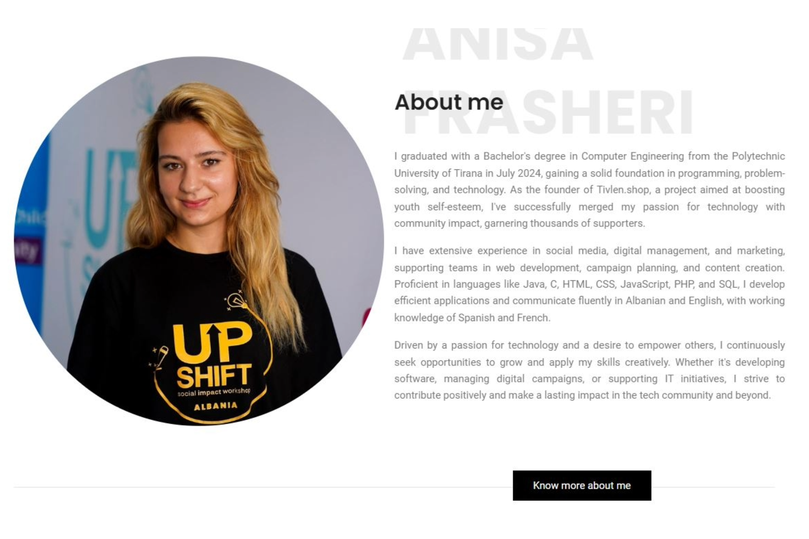
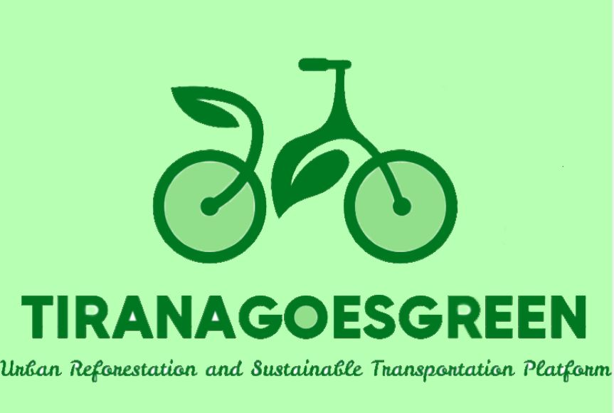
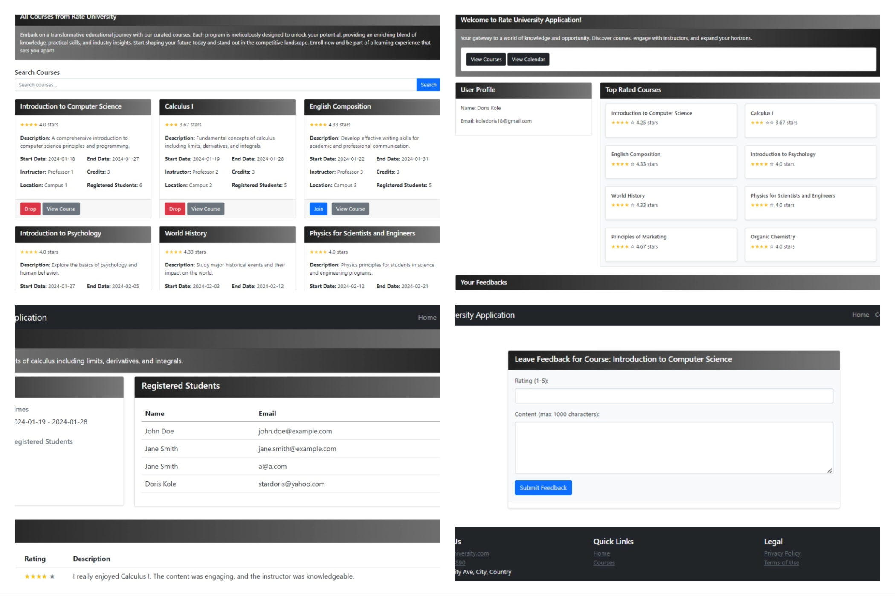
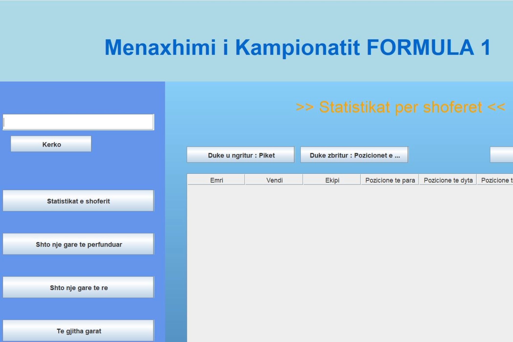
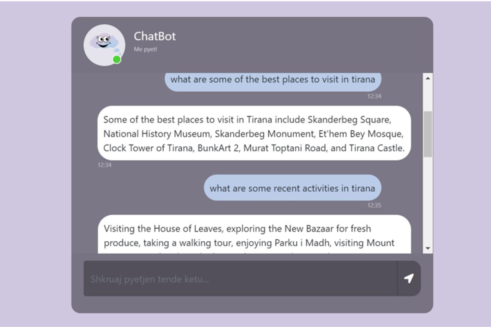

Projects
Development

Portfolio
HTML, CSS, JS
- Responsive design with custom styling using HTML, CSS, and JavaScript.
- Interactive elements to showcase projects and skills effectively.
- Includes sections like About, Projects, and Contact, optimized for performance.

TiranaGoesGreen
HTML, CSS, JS, Python
- Utilizes data from the Copernicus Sentinel-2 satellites to monitor urban vegetation health through NDVI (Normalized Difference Vegetation Index) analysis.
- Identifies areas with reduced vegetation to target for urban reforestation efforts, enhancing the green spaces in Tirana.
- Built with HTML, CSS, and JavaScript, providing an interactive platform for users to engage with reforestation initiatives.
- Employs Python for efficient server-side data handling and processing, ensuring accurate analysis and reporting of vegetation data.

University Courses App
Java, Springboot
- Enables students to create accounts, sign in, and manage their course enrollments with detailed course information.
- Students can leave and view feedback, with older feedback automatically removed to keep reviews current.
- Highlights top-rated courses and provides a calendar view for easy scheduling of enrolled courses.

Store Management DB
Oracle, PLSQL
- Develops an Oracle database schema for managing key market operations like inventory, sales, suppliers, and customer relations.
- Implements essential tables, procedures, and triggers for handling items, categories, suppliers, sales, and membership details, ensuring smooth market operations.
- Provides setup instructions, initial data population, and example queries for testing the database functionality.

Formula 1
Java, GUI
- A Java-based GUI application designed to manage and analyze Formula 1 championship data.
- Provides functionality to view and sort driver statistics, manage race data, and generate random race outcomes.
- Built with Java Swing, it offers an intuitive interface to navigate driver statistics, add races, and view race results.

Store Management App
C
- A C application designed to streamline inventory, client, supply, and sales management with robust functionalities.
- Enables item and client registration, supply and sales processing, and inventory status monitoring, alongside generating detailed reports on client expenditures and purchase frequencies.
- Includes capabilities to search items by barcode, manage supplies, track sales, and view general inventory statistics.

Trained Chatbot
ML, Python, Flask, OpenAI
- A chatbot designed to provide information about social activities, cultural centers, and sports facilities in Tirana.
- Uses Machine Learning and OpenAI to offer personalized recommendations and guidance.
- Built to help residents and visitors easily discover events and locations in the city.